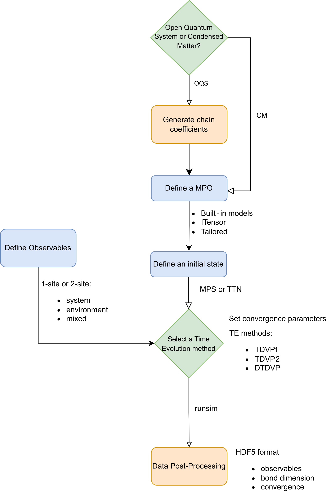

Developers
Simulation Workflow

How to Contribute
Contributions are welcome! Don't hesitate to contact us if you
- found a bug;
- have a suggestion on how to improve the code and/or documentation;
- would like to get involved in writing code and/or documentation.
You can contact us by raising an issue on Github, or by writing to one of the developers.